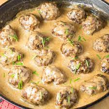

Swedish Meatballs

A meatball dish, made homely by cream and spices.
While similar in construction to italian meatballs, Swedish Meatballs smaller in size, and typically use different spices such as allspice and nutmeg, and usually served with a creamy sauce.
- Beef and Chicken
- Butter
- Beef and Chicken Broth
- Heavy Cream
- Sour Cream
- Beef Bouillon
- Soy Sauce
- All-Purpose Flour
- Dijon Mustard
- Wircestershire Sauce
- Cider Vinegar
- Granulated Sugar
- Salt and Pepper
- Parsely
- Cover 2 large cooking sheets with foil and spray with cooking spray. Preheat oven too 400F
- In a large bowl, combine breadcrumbs, milk, cream, egg, salt, pepper, allspice, nutmeg, and parsley. Set mixture aside to allow milk to soak into the breadcrumbs, for at least 10 minutes.
- Heat a tablespoon of butter and another tablespoon of oil in a medium skil;let over medium heat. Add the minced onion and saute until translucent. Add the minced garlic and saute for 30 seconds. Transfer the onion and garlic mixture to the breadcrumb mixture.
- Add ground beef and chicken into breadcrumb mixture and mix well. Roll meat into 1 1/2 inch balls, and place on a sheet pan about an inch apart, then cook for 20 minutes.
- FOr the sauce, melt butter ina large skillet, add flour and whisk well. Cook medium to low heat and whisk often. Add bbef broth, chicken broth, cream, sour cream, soy sauce, dijon mustard, Worcestshire sauce, cider vinegar, sugar, and black pepper.Sean with salt to taste, then bring to a boil over medium heat, then reduce heat to low and add meatballs. SImmer, stirring gently & often, until sauce has thickened, and add parsley and stir.
- Serve over egg noodles, mashed potatoes or macaroni.